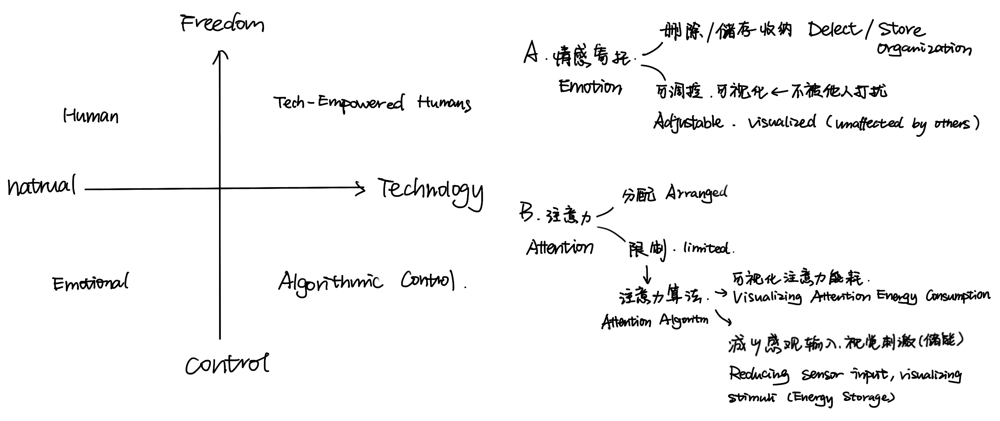
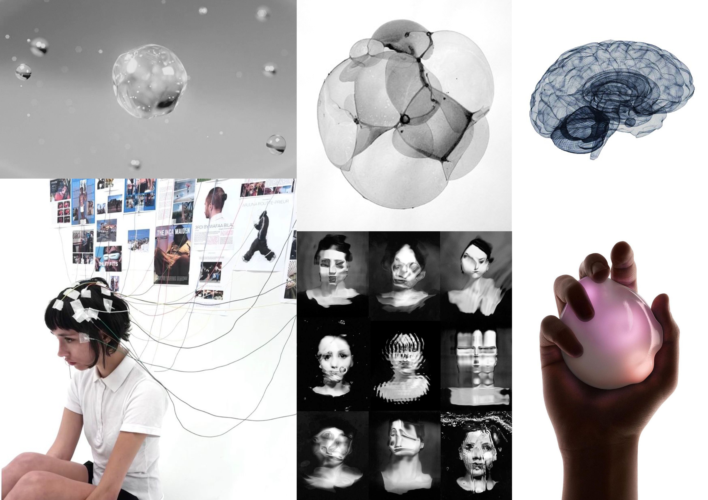
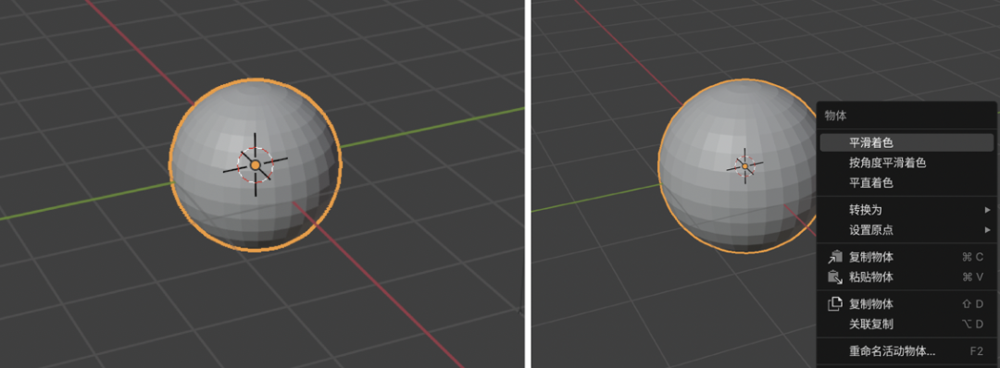
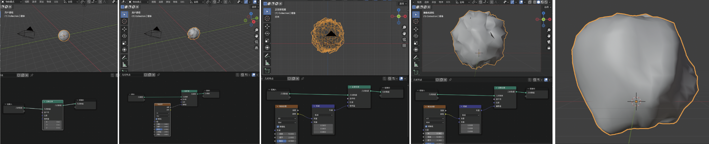
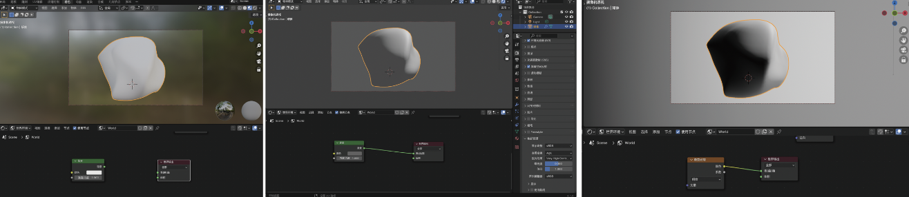
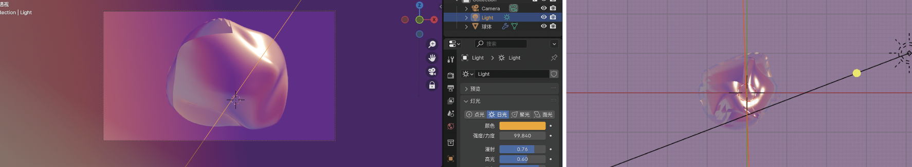
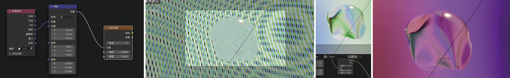
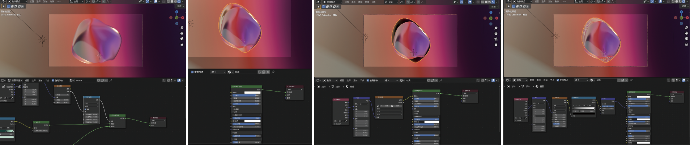
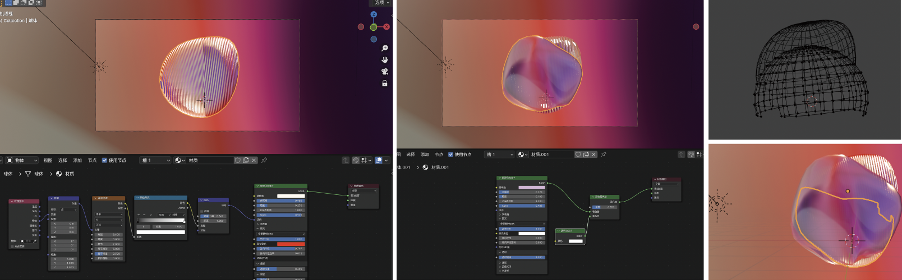
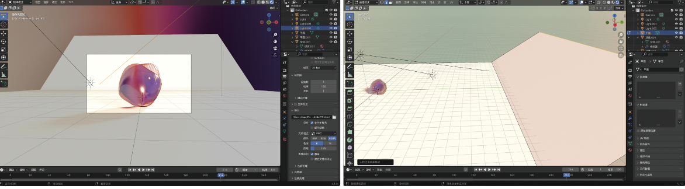

In this future, human attention is measured and managed as a finite form of energy. Similar to the way electric vehicles display remaining battery range, individuals can perceive how much attention they have available throughout the day. Sleep, physical activity, and environmental exposure continuously influence this capacity, replenishing or depleting attention in measurable ways.
Everyday actions are associated with estimated attention costs. Reading, decision-making, social interaction, and creative work require different levels of cognitive energy, presented not as abstract metrics but as clear, legible values. Rather than maximizing productivity, the system encourages conscious allocation — choosing when to spend attention and when to conserve it.
To preserve attention, individuals can intentionally reduce sensory input. Visual stimuli are softened, notifications filtered, and environments simplified. By lowering perceptual noise, attention is stored rather than consumed, reserved for tasks that demand depth, care, or sustained focus. The object representing this future does not optimize life, but reframes attention as something valuable enough to be protected.

In this future, attention is understood not as a fixed quantity within the body, but as a surrounding field that expands and contracts over time. The Attention Bubble visualizes remaining cognitive capacity as a spatial condition — a semi-transparent envelope that becomes denser, noisier, or fragmented as attention is consumed.
Rather than interacting with the body directly, the bubble regulates perception by filtering sensory input. As its surface thickens, visual clarity softens and external stimuli are diffused, allowing attention to be conserved. When the bubble thins or fractures, attention is exposed, depleted, and more easily overwhelmed. The object does not optimize focus, but externalizes attention as a fragile, finite environment.

Begin with sphere and apply smooth shading.

Add Geometry Node and Noise Texture to make the form feel irregular and organic.

Use a Subtract node based on camera view to align the sphere.

Adjust noise parameters to define the bubble’s core density.

Refine transparency and IOR. Apply psychedelic texture.

Introduce sunlight to create reflections and balance colors.

Finalize in Edit Mode using dual-semicircle structures.

Final construction and rendering setup with background planes.